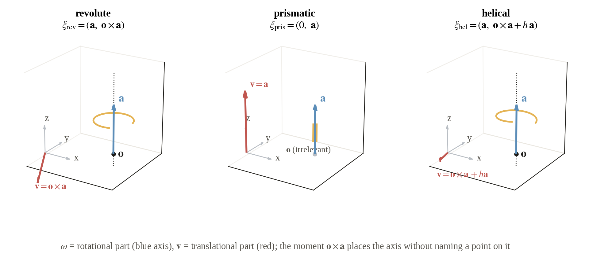
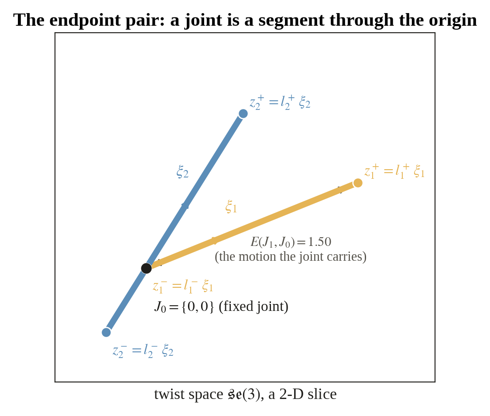
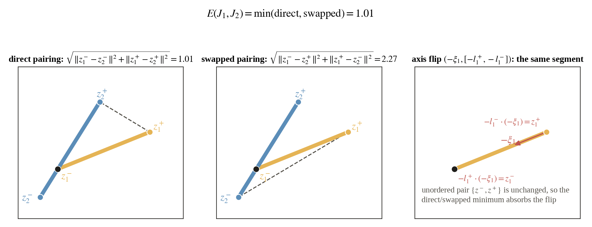
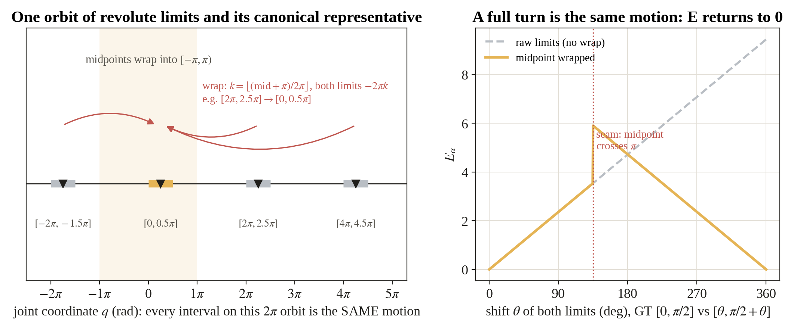
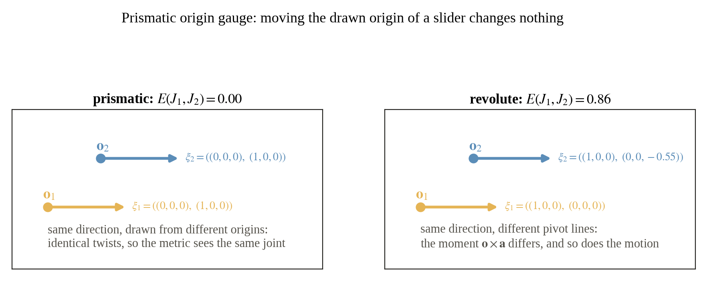
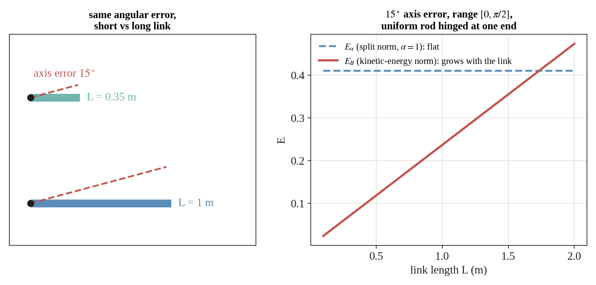
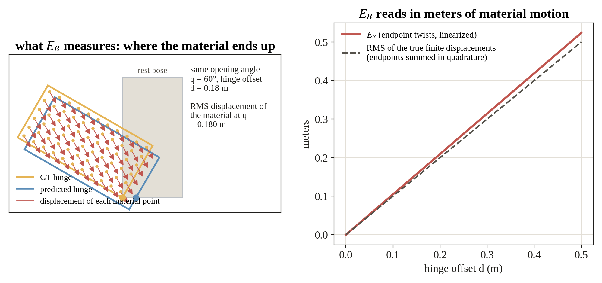
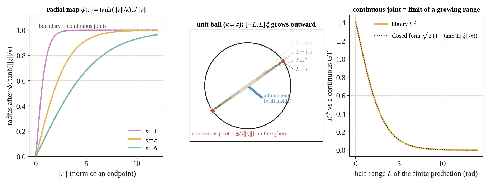
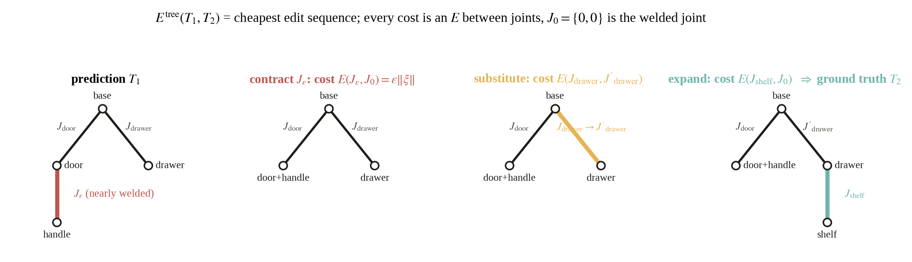
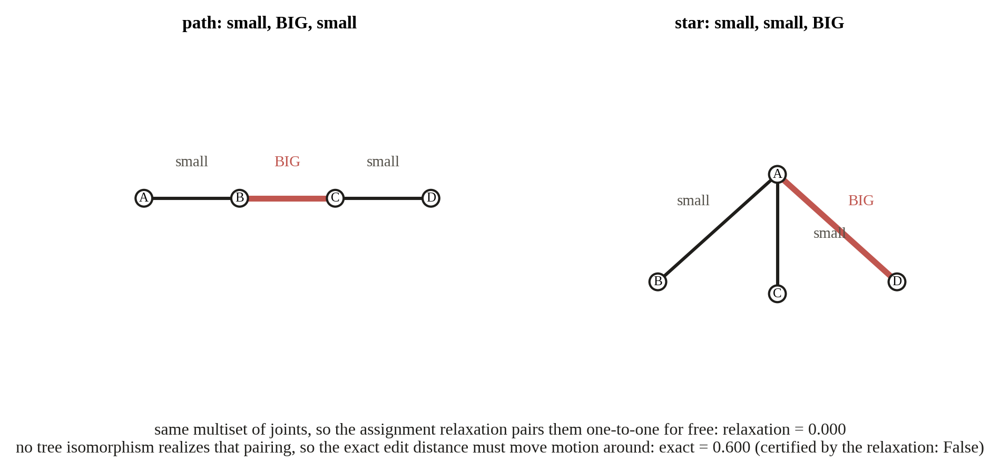

Articulate Arena
Usage documentation for articulatearena, the reference implementation
of the quotient metric E on one-degree-of-freedom articulated joints and its
object-level lifts.
1Overview
articulatearena implements a principled distance between articulated-kinematics
predictions and ground truth. A one-DOF joint
J = (ξ, [l⁻, l⁺]) with unit screw twist ξ ∈ se(3)
and limits l⁻, l⁺ is represented by its unordered pair of
endpoint twists {z⁻, z⁺} = {l⁻ξ, l⁺ξ}. The joint metric is the
quotient distance of flat se(3) × se(3) under the swap:
E(J₁, J₂) = min{ ‖z₁⁻ − z₂⁻‖² + ‖z₁⁺ − z₂⁺‖², ‖z₁⁻ − z₂⁺‖² + ‖z₁⁺ − z₂⁻‖² }1/2,
where ‖·‖ is an injected se(3) norm. A subscript names that choice, Eα under the split norm and EB under the kinetic-energy norm, and superscripts mark the extensions Eϕ (compactified) and Etree (tree lift). The package provides the metric itself, a smooth training surrogate, the radial compactification that extends the metric continuously to unbounded (continuous) joints, and two object-level lifts: an optimal-assignment skeleton distance and a motion-aware tree edit distance with a certified assignment relaxation.
All functions are pure: norms, weights, and tolerances are passed in by the caller and never hardcoded.
The library depends only on numpy, scipy, and pyyaml.
2Installation
articulatearena will be published to PyPI once the source is available. It requires
Python ≥ 3.10 and depends only on numpy, scipy, and pyyaml.
The following will be the install command:
$ pip install articulatearenaTo work from a source checkout instead, run pip install -e . at the repository root. The
editable install registers the same import name, and the bundled scripts also run without installation,
as they place the package directory on sys.path themselves.
3Quickstart
Build endpoint pairs for two joints, choose an se(3) norm, and evaluate
joint_metric. The distance is 0 exactly when the two joints induce the same
motion:
import numpy as np
from articulatearena.new_equation.representation import make_endpoint_pair
from articulatearena.new_equation.inner_product import make_split_norm
from articulatearena.new_equation.E import joint_metric
xi = np.array([0., 0., 1., 0., 0., 0.]) # unit screw axis (omega; nu)
gt = make_endpoint_pair(xi, 0.0, 1.0) # joint limits [a, b]
pred = make_endpoint_pair(xi, 0.0, 1.0)
norm = make_split_norm(alpha=1.0) # the norm is injected, never hardcoded
E = joint_metric(gt.u.data, gt.v.data, pred.u.data, pred.v.data, norm)
print(E) # 0.0 when prediction == ground truthTo score real URDF joints, load them through the reader layer instead of constructing twists by hand:
from articulatearena.read.urdf_loader import load_joint
from articulatearena.new_equation.representation import joint_to_endpoint_pair
joint = load_joint("sample_data/45168/mobility.urdf", "joint_0")
pair = joint_to_endpoint_pair(joint) # unordered {a*xi, b*xi}4Core concepts, as a tutorial
This section is the long version of the paper's Section 3, written for ourselves. Each concept gets its
own figure, drawn by scripts/make_tutorial_figures.py with every number computed by the
library, and a short list of the confusions it is meant to clear up. The paper's notation is kept
throughout.
4.0 Notation cheat sheet
| Symbol | Meaning | In code |
|---|---|---|
| ξ = (ω, v) | A twist, an element of se(3) ≅ ℝ⁶: rotational part ω, translational part v. Joints use a unit screw: ‖ω‖ = 1 if it rotates, else ‖v‖ = 1. | Twist, Joint.xi_hat |
| a, o, h | Axis direction, a point on the axis (the origin), and the pitch (meters per radian). These are the URDF parameters that the twist absorbs. | screw_twist(a, o, type, h) |
| q | The joint coordinate: radians for revolute and helical, meters for prismatic. q = 0 is the stored URDF state (the anchor g₀). | sweep parameter |
| l⁻, l⁺ | The motion limits, values of q. ±∞ for a continuous joint. | Joint.a, Joint.b |
| J = (ξ, [l⁻, l⁺]) | A one-DOF joint: what it moves along and how far. | Joint |
| z± = l± ξ | The two endpoint twists. Together they form the unordered pair {z⁻, z⁺} that the metric compares. | EndpointPair.u/.v |
| J₀ = {0, 0} | The fixed (welded) joint, both endpoints at the origin. E(J, J₀) is the motion a joint carries. | cost_to_fixed |
| E | The quotient metric on endpoint pairs. A subscript names the norm inside it, a superscript names an extension. | joint_metric |
| ‖·‖α, Eα | Split norm ‖Δω‖² + α²‖Δv‖² with an inverse length α. Dimensionless. Benchmark default α = 1. | make_split_norm(alpha) |
| ‖·‖B, EB | Kinetic-energy norm of the moving link B (mass m, center of mass c, inertia I). In meters. | make_kinetic_energy_norm(inertia) |
| ϕ, κ, Eϕ | Radial compactification into the unit ball with scale κ (default π), and E evaluated after it. Handles continuous joints. | radial_compactify, compactified_joint_metric |
| Etree | The metric lifted to whole kinematic trees as an edit distance whose costs are all E values. | exact_tree_distance, assignment_tree_distance |
4.1 A joint is a twist

A URDF describes a joint with four separate things: a type, an axis direction a, an origin o, and limits. The first three are really one object, an infinitesimal rigid motion, and that object is the twist ξ = (ω, v). A revolute joint rotates about the line through o with direction a, which is ξrev = (a, o × a). A prismatic joint slides along a and has no rotation at all, ξpris = (0, a). A helical joint adds a translation of h meters per radian along the axis, ξhel = (a, o × a + h a). Flowing along ξ for q units gives the placement exp(q ξ̂) g₀ of the child link, where g₀ is the placement stored in the file.
Why "unit". The twist is normalized so that q carries the physical unit: radians for rotation, meters for translation. The limits are values of q and inherit that unit.
The anchor is shared data. Prediction and ground truth describe the same object in the same stored state, so g₀ is not something the kinematic metric judges. Re-zeroing q is not free because it moves the anchor, which the stored meshes pin down.
4.2 The endpoint pair

Multiply the unit twist by the two limits and the joint becomes a pair of points in se(3), {z⁻, z⁺} = {l⁻ ξ, l⁺ ξ}. The direction of the segment is the screw, its length is the range, its position along the line is where the range sits relative to the anchor. Nothing about the joint is lost and nothing about it is duplicated. The segment passes through the origin whenever l⁻ ≤ 0 ≤ l⁺, that is, whenever the stored state is inside the range. The fixed joint is the degenerate segment {0, 0}.
Why an unordered pair. Nothing physical distinguishes the two ends of a segment. Ordering them would make the metric depend on which limit is called lower, which is exactly the sign convention the next section removes.
E(J, J₀) is the "size" of a joint. Under the split norm it is √((l⁻)² + (l⁺)²) times a fixed factor, and under the kinetic-energy norm it is the RMS material displacement over the range. The tree metric prices structural edits with it.
4.3 The metric E and the ℤ₂ swap

Two unordered pairs can be matched in two ways, direct (z₁⁻ ↔ z₂⁻, z₁⁺ ↔ z₂⁺) or swapped. Each way has a flat distance in se(3) × se(3), the square root of the two squared endpoint differences, and
E(J₁, J₂) = min{ ‖z₁⁻ − z₂⁻‖² + ‖z₁⁺ − z₂⁺‖², ‖z₁⁻ − z₂⁺‖² + ‖z₁⁺ − z₂⁻‖² }1/2.
This is the quotient distance of a flat space by the group ℤ₂ acting as the swap, and a quotient by a finite group of isometries is again a metric. That single fact gives the triangle inequality, which no hand-built combination of component errors has.
Squares then a root, not a sum of norms. The two endpoint differences are combined in quadrature. This is what makes E the flat distance of the product space and what makes EB an RMS quantity later.
Where E is not smooth. Only on the tie locus where the two pairings cost the same. For training,
training_loss replaces the min by a smooth swap-invariant surrogate.
4.4 Wrap and gauge symmetries

A revolute exponential is 2π-periodic, so shifting both limits by
2πk rewrites the same motion over the same anchor. Before forming the
endpoint pair, the library shifts a revolute joint's limits by the common
2πk that places the midpoint ½(l⁻ + l⁺) in
[−π, π) (wrap_revolute_limits). Only revolute joints are wrapped:
a prismatic shift translates and a helical shift also translates, so for them
k = 0 is forced.
Joint, so the prior
component scores still see the unwrapped encoding, which is exactly the failure the paper's table
documents.

A prismatic twist is (0, a) and contains no origin at all, so moving the drawn origin is pure gauge and the metric returns zero. The prior origin score charges ‖o₁ − o₂‖ for it. For a revolute joint the origin matters through the moment, which is the physically right behavior: a hinge on a different line moves the door differently.
4.5 Which norm: Eα versus EB
The formula for E only asks for a norm on twist differences Δz = (Δω, Δv) that comes from an inner product. Two are offered, and the subscript on E says which one is inside.

The split norm ‖Δz‖α² = ‖Δω‖² + α²‖Δv‖² weighs rotation against translation through one inverse length α. It needs no geometry, is dimensionless, and compares every joint of every object by one rule. The kinetic-energy norm ‖Δz‖B² = (1/m) Δωᵀ I Δω + ‖Δv + Δω × c‖² lets the moving link set the scale: m, c, and I are the mass, center of mass, and inertia of the ground-truth child link. Under it EB is in meters and equals the RMS linearized motion of the link's material.

α is a size assumption. For a centered link with isotropic inertia and gyration radius r, the kinetic norm equals r² times the split norm at α = 1/r. A global α therefore assumes every link has the same size 1/α. The object-scale ablation shows the consequence: EB(s) = s EB(1) under a uniform scaling s, while Eα is flat on angular errors.
EB is still a metric. The body B is fixed by the ground truth before any prediction is seen and is the same for every method on that joint, so the norm is one fixed inner-product norm and the quotient argument applies verbatim. Different ground-truth joints carry different norms, which is the intended physical weighting.
Units. Eα is a pure number, EB is meters. Never compare their heights, only their shapes.
4.6 Continuous joints and the compactification Eϕ

A continuous joint has l± = ±∞, so its endpoint twists are at infinity and the flat distance is undefined. The radial map ϕ(z) = tanh(‖z‖/κ) z/‖z‖ pulls all of se(3) into the open unit ball and sends the continuous joint to the antipodal boundary pair {±ξ/‖ξ‖}, the axis direction up to sign. Then Eϕ(J₁, J₂) = E({ϕ(z₁⁻), ϕ(z₁⁺)}, {ϕ(z₂⁻), ϕ(z₂⁺)}). Against a continuous ground truth with unit screw, a finite prediction [−L, L] on the same screw scores √2 (1 − tanh(L‖ξ‖/κ)): it starts at √2, the distance from the welded joint, and decays to zero. A continuous joint is literally the limit of a growing range, with no formula switch.
What κ does. It is a pure horizontal dilation of every curve, with half decay near L‖ξ‖ ≈ 0.55 κ. The default κ = π keeps ranges up to a full turn in the responsive part of tanh, and on the benchmark's finite ground-truth joints none saturate (95th percentile radius 0.78 at worst).
Finite joints may also be compactified. The map is defined on all of se(3), so Eϕ is the one score that covers every joint type at once. That is why the benchmark's common column is Eαϕ. Raw EB is reported only on pairs whose limits are both finite.
4.7 Trees: Etree and the assignment relaxation

An object is a tree with links as nodes and joints on the edges, and the same object admits many
trees: parts can be relabeled, the base re-chosen, a handle welded to a drawer or split off. The tree
metric is the cheapest sequence of edits from one tree to the other,
Etree(T₁, T₂) = infπ Σo∈π c(o), with
substitution costing E(J, J′) and contraction or expansion costing
E(J, J₀). A spurious joint that barely moves costs
ε‖ξ‖, not a constant penalty, so topology errors and joint errors are priced in
the same motion currency and the metric is continuous through the welded boundary. Exactly fixed edges
are contracted first (contract_small_edges) because they are representation noise.

Any edit sequence can be reordered into contract, then substitute along a tree isomorphism, then
expand. The exact distance is therefore a minimum over matchings of the edge sets that extend to an
isomorphism of the contracted trees. Dropping that realizability condition gives the
assignment relaxation: a Hungarian matching over the joint multisets with
E(J, J₀) as the unmatched cost (assignment_tree_distance). It is
always a lower bound, it is polynomial for any input, and it needs only the multiset of predicted
joints. Whenever its optimal matching happens to be realizable, checked in linear time by
matching_realizable, the relaxation certifies the exact value.
exact_tree_distance returns (distance, certified) and falls back to a small
constrained search otherwise.
Why not a constant topology penalty λ. It jumps by λ the moment a joint appears, is capped at 2λ once unmatching becomes cheaper than matching, and the forced-matching variant escapes the cap only by breaking the triangle inequality. Motion-priced edits have no knob and none of these failures.
The per-link weighting and the metric proof. With one fixed inner product Etree is a metric on representation-equivalence classes. With the kinetic-energy norm instantiated per ground-truth link, contraction and expansion change which body weighs which joint, so that variant is used as a score without the metric claim.
4.8 Reading the table headers
| Column | Norm | Extension | Defined on |
|---|---|---|---|
| EB | kinetic-energy (meters) | none, raw endpoints | matched pairs with finite limits on both sides |
| Eαϕ | split, α = 1 | compactified, κ = π | every matched pair, continuous joints included |
| Eαϕ,tree | split, α = 1 | compactified and lifted to the tree | whole objects, the primary score |
The rule is simple once seen: the subscript is the inner product inside the norm, the superscript is what was done to the endpoints before or after E. The design space is the product of the two choices, and any cell of it is a legitimate score.
5API reference
Public functions and classes, by module. All array arguments are NumPy float64, and
twists are shape (6,) in the paper's convention ξ = (ω, v).
Types · articulatearena.types
Twist | Immutable shape-(6,) twist wrapper, raw array via .data. |
EndpointPair | Unordered pair {u, v} of endpoint twists. |
Joint | Unit screw twist xi_hat, limits a, b (±inf for continuous), and joint_type. |
LinkInertia | Mass, center of mass, and 3×3 rotational inertia of a link. |
InnerProduct | Protocol: callable from a shape-(6,) twist to its squared norm. |
Representation · new_equation.representation
screw_twist(axis_dir, point, joint_type, pitch=0) |
Unit screw twist of a one-DOF joint from a world-frame axis and a point on it. |
make_endpoint_pair(xi_hat, a, b) |
The unordered endpoint pair {a·ξ, b·ξ} (code names the limits
a, b = paper's l⁻, l⁺). |
joint_to_endpoint_pair(joint) |
Endpoint pair of a typed Joint. |
Joint metric · new_equation.E
joint_metric(u1, v1, u2, v2, inner_product) |
The quotient metric E, the ℤ₂-swap minimum over endpoint pairings. |
training_loss(u1, v1, u2, v2, inner_product, epsilon=1e-9) |
Smooth swap-invariant surrogate for E² (differentiable objective). |
Norms · new_equation.inner_product
make_split_norm(alpha) | Split norm ‖Δω‖² + α²‖Δv‖². |
make_kinetic_energy_norm(inertia) | Kinetic-energy norm from a LinkInertia. |
make_riemannian_norm(metric) | Norm from a user-supplied SPD 6×6 matrix. |
Continuous joints · new_equation.continuous
radial_compactify(xi, inner_product, kappa) | Radial map ϕ into the open unit ball. |
continuous_joint_repr(xi_hat, inner_product, kappa) | Boundary endpoint pair of an unbounded joint. |
compactified_joint_metric(u1, v1, u2, v2, inner_product, kappa) | E∘ϕ, the compactified metric. |
interval_term(a1, a2) | Extended-real distance between limit values. |
Tree metric · new_equation.tree
cost_to_fixed(pair, inner_product) | Contraction/expansion cost E(J, J₀). |
assignment_tree_distance(pairs1, pairs2, inner_product, unmatched_cost=None) |
Assignment relaxation over joint multisets (Hungarian, padded matrix). |
contract_small_edges(edges, inner_product, tol=1e-12) |
Contract exactly-fixed (zero-motion) edges of a labeled tree. |
assignment_matching(pairs1, pairs2, inner_product) |
Relaxation value together with its optimal matching. |
matching_realizable(edges1, edges2, matching) |
Linear-time check that a matching extends to an isomorphism of the contracted trees. |
exact_tree_distance(edges1, edges2, inner_product) |
Exact motion-aware tree edit distance. Returns (distance, certified). |
Skeleton distance · new_equation.skeleton
topology_penalty(num_unmatched, num_relation_mismatches, lambda_topology, relation_weight=1) |
Constant-λ penalty for surplus joints and relation mismatches. |
skeleton_distance(cost_matrix, lambda_topology, ...) |
Assigned E cost plus topology penalty. Returns (row_ind, col_ind, total). |
Material motion · new_equation.material_motion
se3_exp(xi_hat, theta) | Rigid transform exp(θ ξ̂). |
config_discrepancy(...), finite_joint_discrepancy(...) |
RMS displacement discrepancy of material points swept along two joints (used to calibrate E against physical motion). |
Background math · general_equation
exp_map.exp_map(xi_hat, q=1) | se(3) exponential map. |
assignment.assign(cost_matrix) | Hungarian optimal assignment. |
tree_edit.tree_edit_distance(...) | Classical ordered tree edit distance (Zhang-Shasha) on TreeNodes. |
configuration.configuration_difference(...) | L² configuration difference (Park 1995). |
I/O · read and write
read.config_loader.load_config(path=None) |
Flatten a grouped YAML config into the Config dataclass. Defaults to configs/default.yaml. |
read.urdf_loader.load_joint(urdf_path, joint_name) |
Typed Joint from a URDF, with the axis resolved to the world frame by forward kinematics. |
read.inertia_loader.load_link_inertia, load_joint_child_inertia |
LinkInertia of a link / of a joint's child link, for the kinetic-energy norm. |
read.case_loader.load_case, load_case_joints |
Prediction/ground-truth evaluation case referencing two URDF joints. |
write.report.Report_Generator |
JSON / Markdown evaluation reports. |
Baselines · previous_metrics.component_scores
Component scores of prior evaluation templates (type, axis, origin, and limit errors with thresholded
joint_success), kept for reproducing §3-style baseline numbers.
6Command-line usage
The repository entry point evaluates a prediction/ground-truth case end to end. It loads the config, runs the pure metric functions, and writes a report:
$ python scripts/run.py --config configs/default.yaml
# → Report written to out/metrics_report.jsonconfigs/default.yaml groups the knobs that the paper treats as caller-supplied:
| Group | Keys |
|---|---|
inner_product | form (split / kinetic / riemannian), split_norm_alpha, riemannian_metric. |
compactification | kappa (benchmark: π), phi_at_zero. |
skeleton | lambda_topology, topology_penalty, tree_edit_distance. |
aggregation, geometry | Aggregation form, smoothing ε, geometric weighting. |
prediction, ground_truth | URDF path + joint name of each side of the case. |
Auxiliary scripts: scripts/generate_error_cases.py synthesizes controlled error cases from
a URDF, scripts/run_previous_metrics.py scores the same cases with the baseline component
metrics, and examples/run_real_cases.py evaluates real PartNet-Mobility objects.